First of all you will need some parts. Here's a small list of parts. I sourced most from amazon & aliexpress, as it's very hard to source electronics parts elsewhere ლ(╹◡╹ლ)
-ESP32 :
AZDelivery that has a 5V out pin for easy voltage for micro SD.
-Adafruit MicroSD Breakout board.
-Micro SD card (32 Gb MAX)
-
MAX98357A I2S amp.
-a PCB button
-perfboard, I used these small sized ones as they fit everything perfectly.
-a battery system. The ESP32 can run off a normal powerbank, or you can
build your own small battery system using the following and an 18650 cell.
-some wire and some solder
-optionally an LED and a 220 or 270 ohm resistor.
Eerst en vooral heb je wat onderdelen nodig. Hier is een kleine onderdelenlijst. Ik heb het meeste gehaald bij Amazon & Aliexpress, want elektronica-onderdelen zijn moeilijk elders te vinden ლ(╹◡╹ლ)
-ESP32 :
AZDelivery met een 5V-uitgangspin, handig voor de spanning van de micro SD.
-Adafruit MicroSD Breakout board.
-Micro SD-kaart (max. 32 Gb)
-
MAX98357A I2S-versterker.
-een PCB-drukknop
-perfboard, ik gebruikte de kleine formaten omdat alles daar perfect op past.
-een batterijsysteem. De ESP32 kan op een gewone powerbank draaien, of je kan
zelf een klein batterijsysteem bouwen met het onderstaande en een 18650-cel.
-wat draad en soldeer
-optioneel een LED en een weerstand van 220 of 270 ohm.
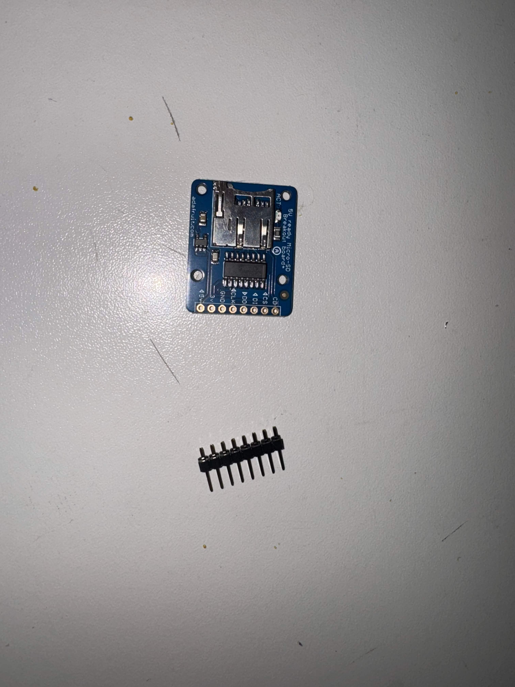
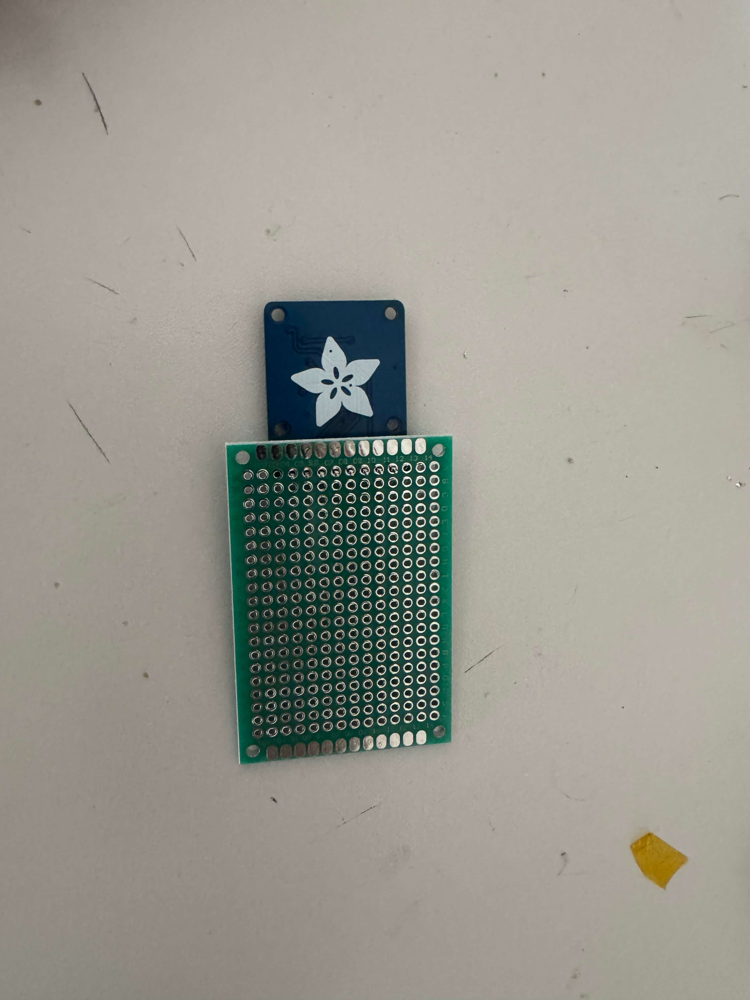
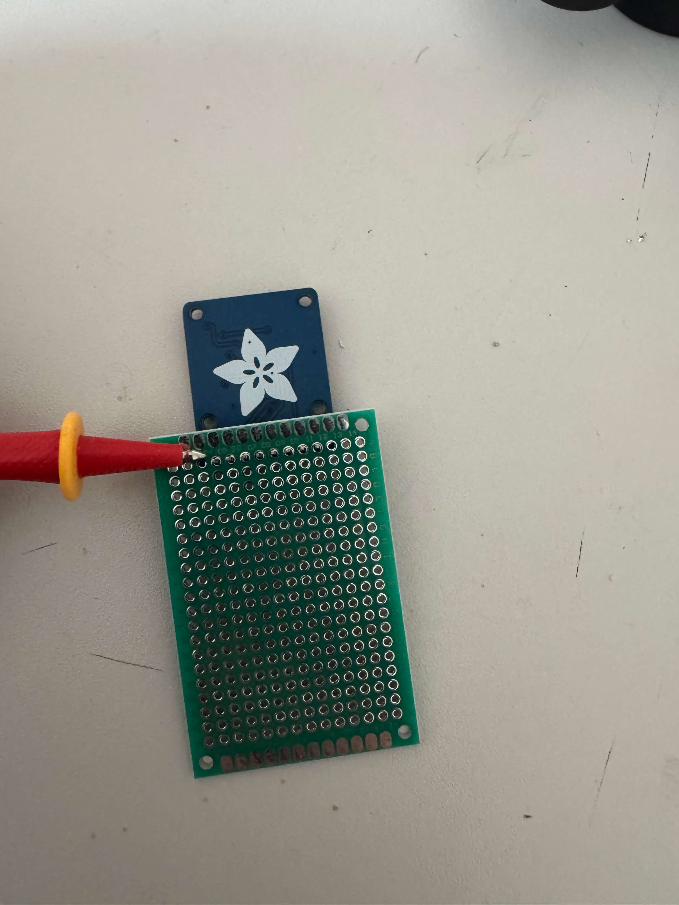
We start with soldering the MicroSD card. Solder on the micro SD pins and then place it in the middle of the perfboard on one side. You can solder it on directly. There should be 3 free pins on each side of the perfboard so the micro SD is perfectly centered.
We beginnen met het solderen van de Micro SD-kaart. Soldeer de pinnen van de micro SD vast en plaats de kaart vervolgens in het midden van het perfboard, aan één kant. Je kan hem er rechtstreeks op solderen. Er moeten 3 vrije pinnen aan elke kant van het perfboard overblijven, zodat de micro SD perfect gecentreerd zit.
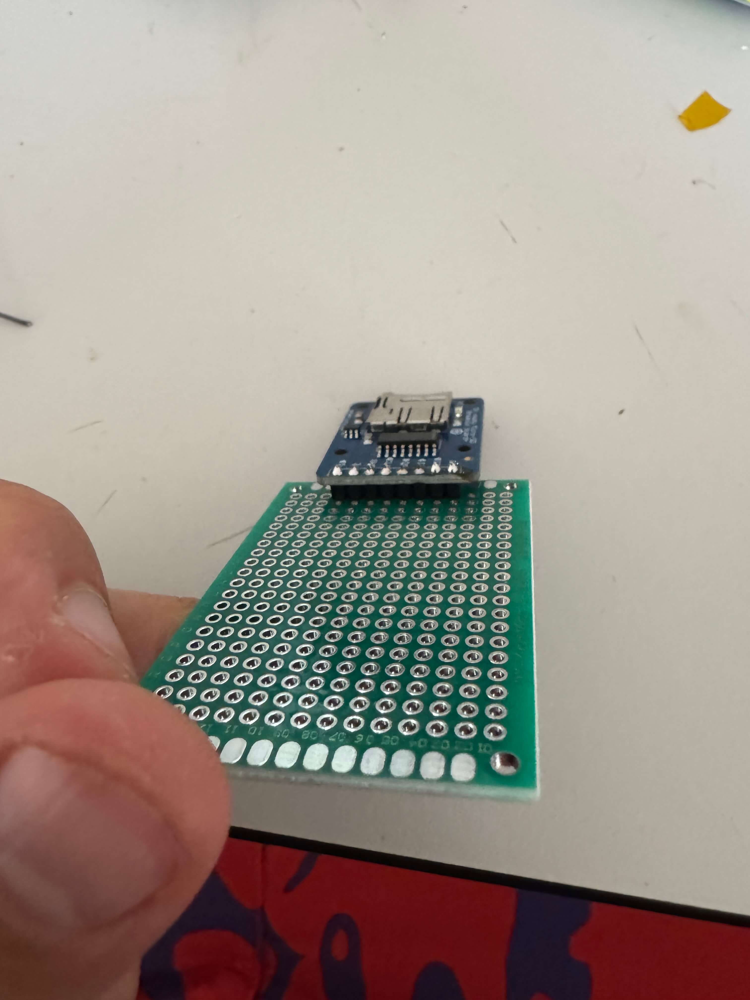
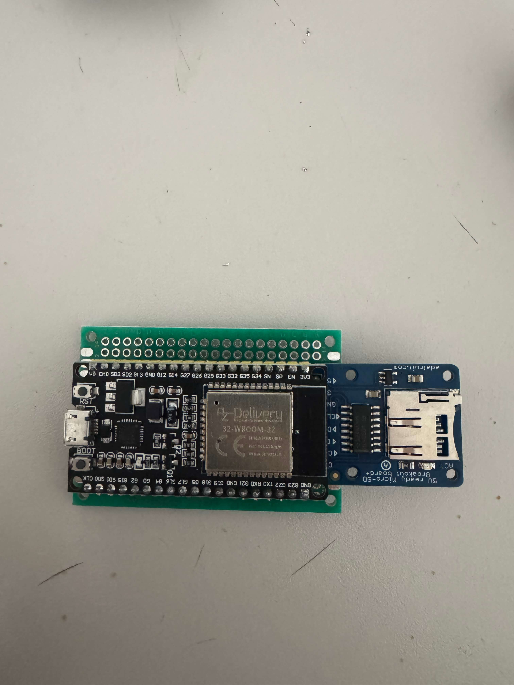
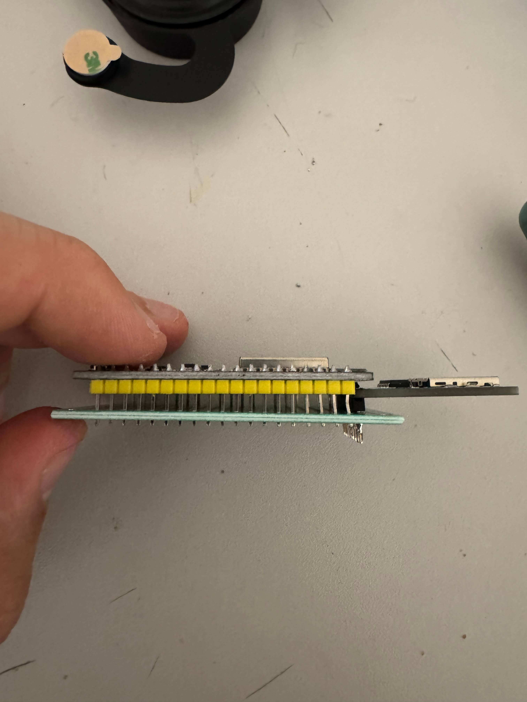
Now we can solder on the ESP32. Take care in how you position it. The USB input should point the other way as the Micro SD breakout. You can't insert the pins fully, as there is not enough space on the perfboard and we want our audip player to stay small.
Go ahead and solder on the pins on the four corners of the ESP32, just to keep it in place.
Nu kunnen we de ESP32 vastsolderen. Let goed op hoe je hem positioneert. De USB-ingang moet de andere kant op wijzen dan de Micro SD-breakout. Je kan de pinnen niet volledig insteken, want er is niet genoeg ruimte op het perfboard en we willen onze audiospeler klein houden.
Soldeer de pinnen op de vier hoeken van de ESP32 vast, gewoon om hem op zijn plaats te houden.
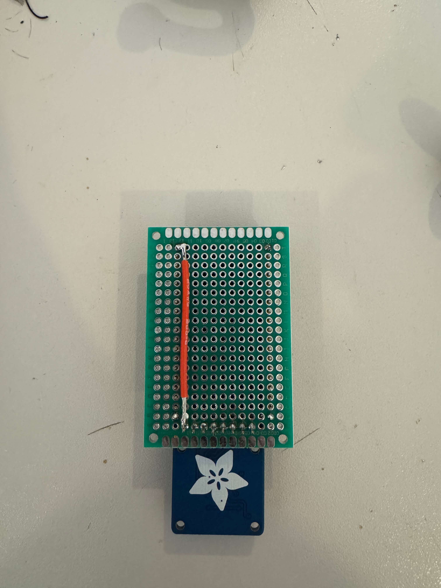
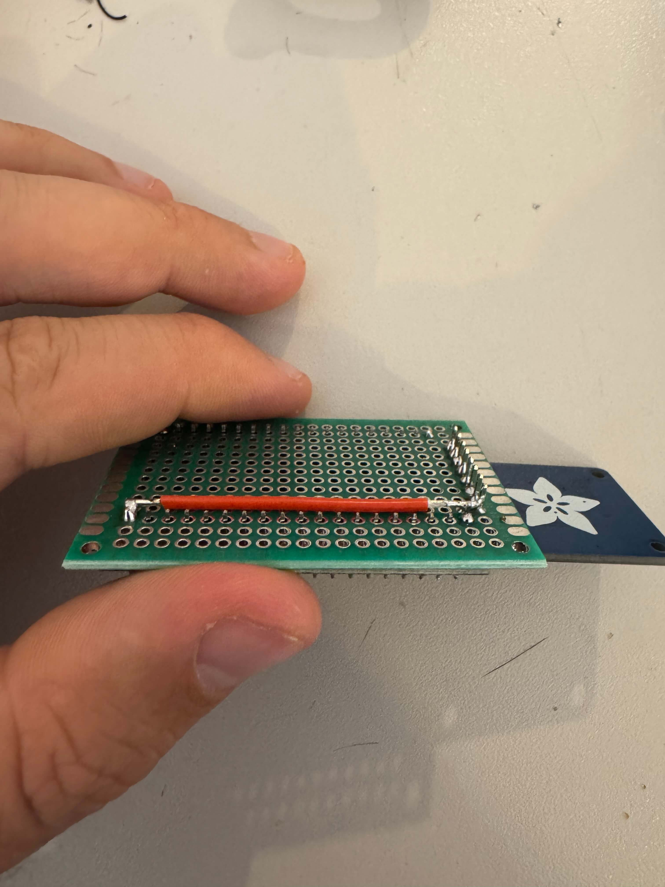
We can now connect the first wire, which will provide the MicroSD board with it's necessary voltage. I do this by first adding some extra solder in the hole just next to the two pins we want to connect. Go ahead and fill hole T11 and B11. This way the wire has some extra structural integrity. Now connect hole T12 with hole A11 using a red wire, so we know it's voltage in.
Nu kunnen we het eerste draadje aansluiten, dat de MicroSD-module van de nodige spanning zal voorzien. Ik doe dit door eerst wat extra soldeer toe te voegen in het gaatje net naast de twee pinnen die we willen verbinden. Vul gaatje T11 en B11. Zo krijgt het draadje wat extra structurele stevigheid. Verbind nu gaatje T12 met gaatje A11 met een rood draadje, zodat we weten dat dit de voedingsingang is.
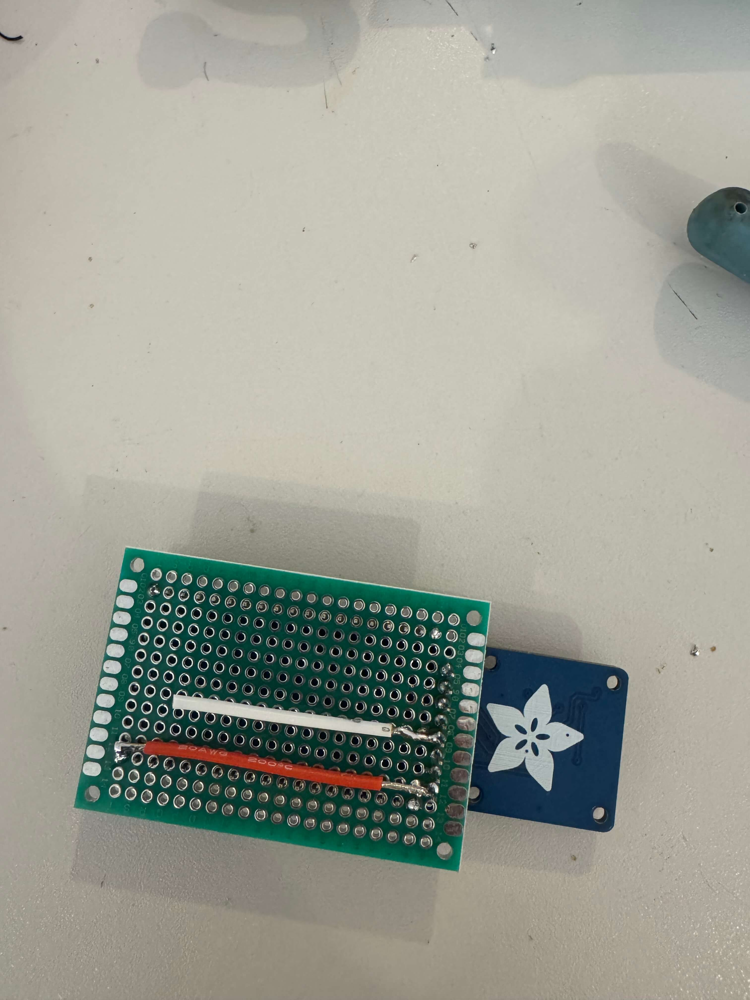
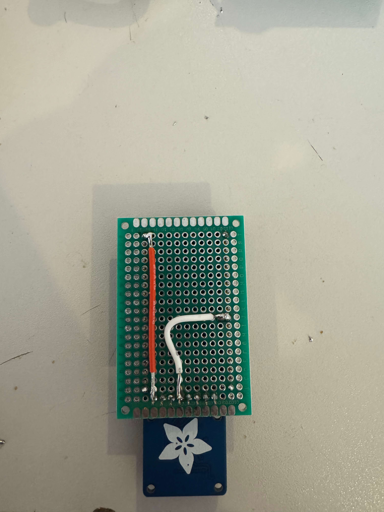
We now solder on the next wire, which connects the micro CLK on the ESP32's GPIO 18. On the underside of the PCB, this means we connect A8 with J2. I added solder in the holes next to it again.
data that is exchanged between the ESP32 and the micro SD card go over a protocol titled SPI. This wire shares a common clock between the two PCB's, so the data is synchronised.
Nu solderen we het volgende draadje, dat de micro CLK verbindt met GPIO 18 van de ESP32. Aan de onderkant van de PCB betekent dit dat we A8 met J2 verbinden. Ook hier voegde ik weer soldeer toe in de gaatjes ernaast.
Data die tussen de ESP32 en de micro SD-kaart wordt uitgewisseld, loopt over een protocol genaamd SPI. Dit draadje deelt een gemeenschappelijke klok tussen de twee PCB's, zodat de data gesynchroniseerd blijft.
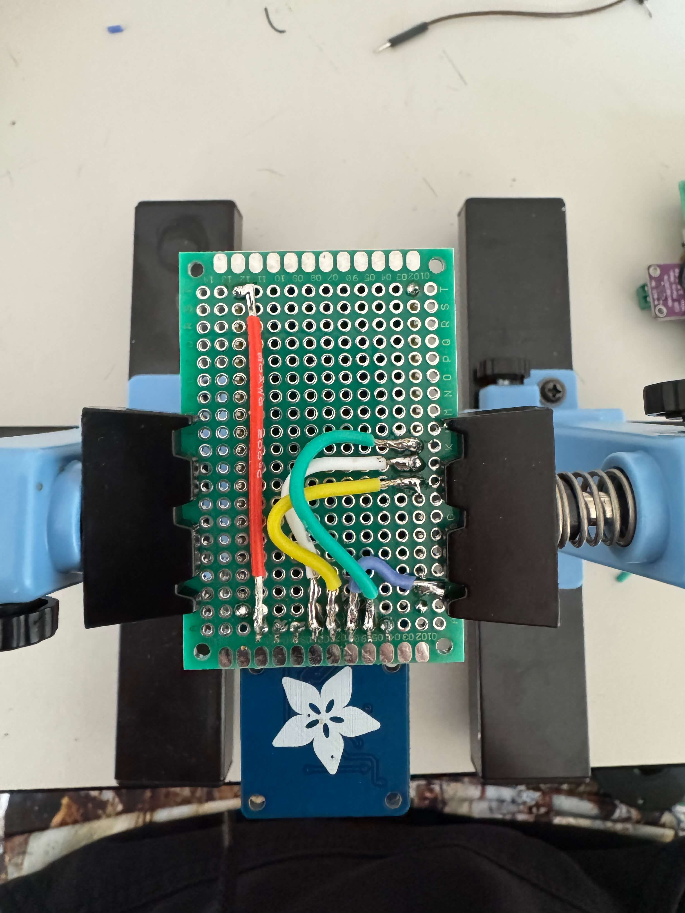
We can now solder on the rest of the SPI lines, as indicated in the image above. We are connecting the following:
-MISO (D0): Master input slave output, this sends date from the SD card to ESP32.
-MOSI (D1): Master output slave input, this controls the SD card from ESP32.
-CS: the chip select that tells the SD-card to wake up.
Nu kunnen we de rest van de SPI-lijnen vastsolderen, zoals aangegeven op de afbeelding hierboven. We verbinden het volgende:
-MISO (D0): Master input slave output, dit stuurt data van de SD-kaart naar de ESP32.
-MOSI (D1): Master output slave input, dit stuurt de SD-kaart aan vanuit de ESP32.
-CS: de chip select die de SD-kaart vertelt om wakker te worden.
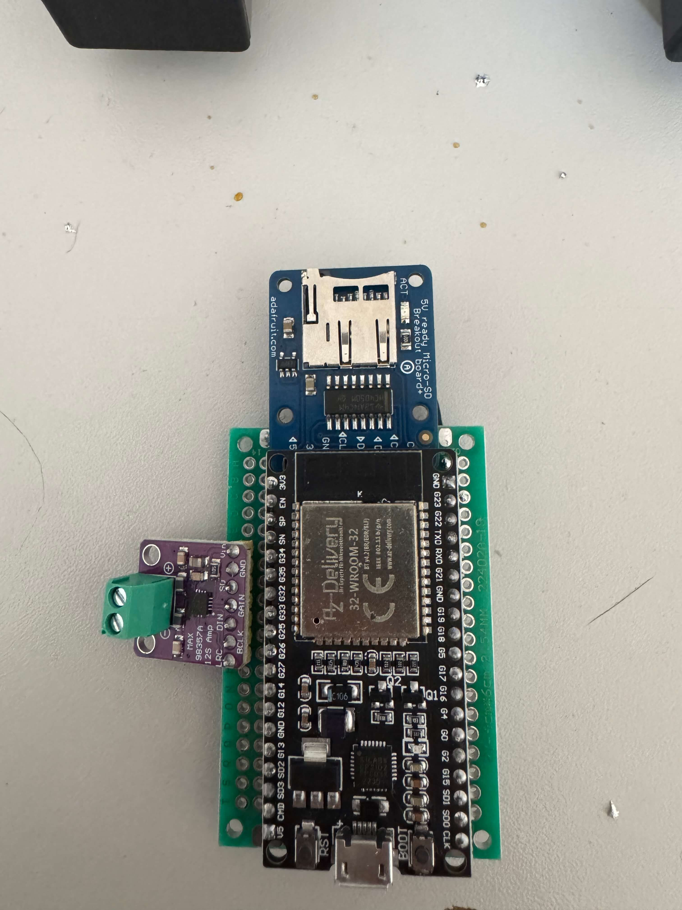
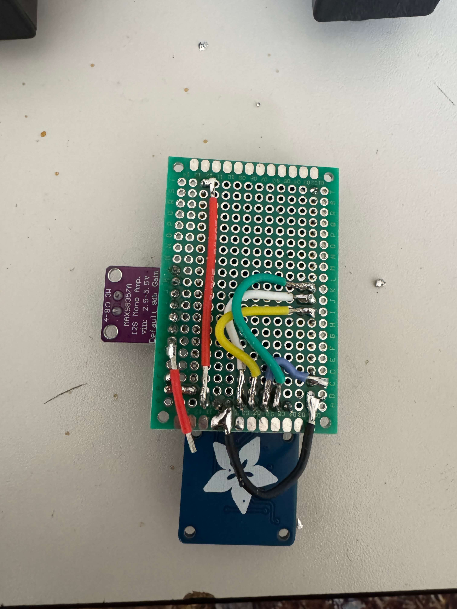
We can now solder on the I2S amp. Take care to position it correctly, as we will build direct solder bridges to the pins next to it. Vin should be on F14. This way LRC can be directly bridged to GPIO27. Go ahead and solder on all the legs of the break-out.
Nu kunnen we de I2S-versterker vastsolderen. Let goed op de juiste positionering, want we bouwen straks directe soldeerbruggen naar de pinnen ernaast. Vin moet op F14 komen. Zo kan LRC rechtstreeks overbrugd worden naar GPIO27. Soldeer alle pootjes van de breakout vast.
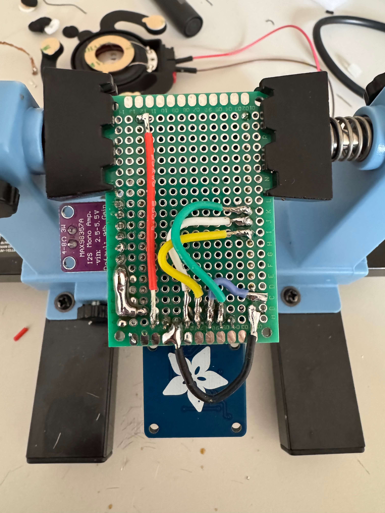
We will now make a power trace to power the I2S amp. Connect B12 to F14 by either building up solder or running a wire. Take care to not bridge the gap with the SD-card voltage in, as it will power our 3.3v pin on the ESP32 with 5v, which might ruin it!
Nu maken we een voedingsbrug om de I2S-versterker van stroom te voorzien. Verbind B12 met F14, hetzij door soldeer op te bouwen, hetzij met een draadje. Let op dat je deze niet per ongeluk verbindt met de voedingsingang van de SD-kaart, want dan komt er 5V op onze 3,3V-pin van de ESP32 te staan, wat hem kan beschadigen!
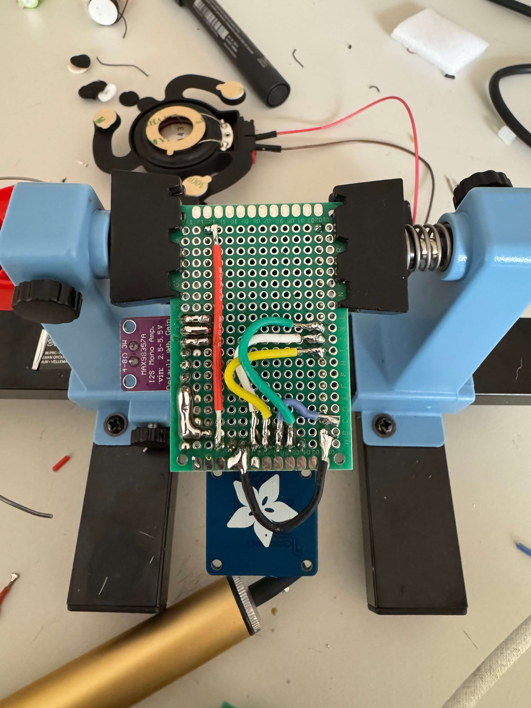
We can now bridge the other lines for the I2S amp. These are:
-I2S LRC: the clock, which explains to the amp which part of the data is for the Left or Right channel
-I2S BCLK: the clock signal which synchonises the individual bits, so the data doesn't get jumbled
-I2S data: the actual data which contains the music.
We are now nearing the end and only need to attach the button and I2S ground still.
Nu kunnen we de overige lijnen voor de I2S-versterker overbruggen. Dit zijn:
-I2S LRC: de klok, die aan de versterker duidelijk maakt welk deel van de data voor het linker- of rechterkanaal is
-I2S BCLK: het kloksignaal dat de individuele bits synchroniseert, zodat de data niet door elkaar raakt
-I2S data: de eigenlijke data met de muziek.
We zijn nu bijna klaar en moeten enkel nog de knop en de I2S-massa aansluiten.
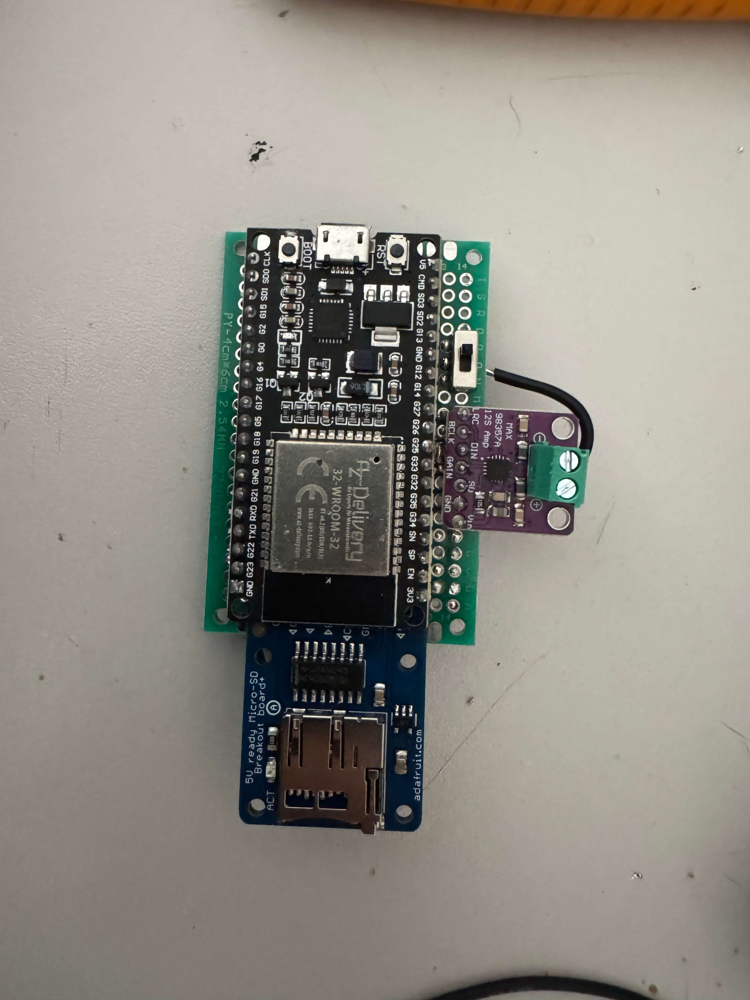
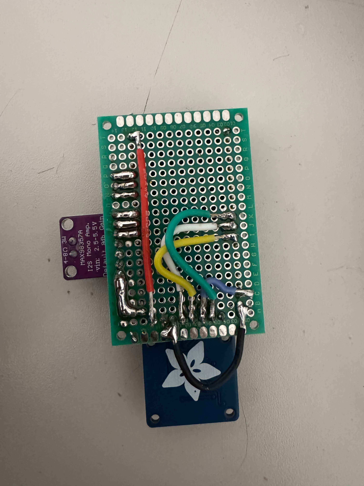
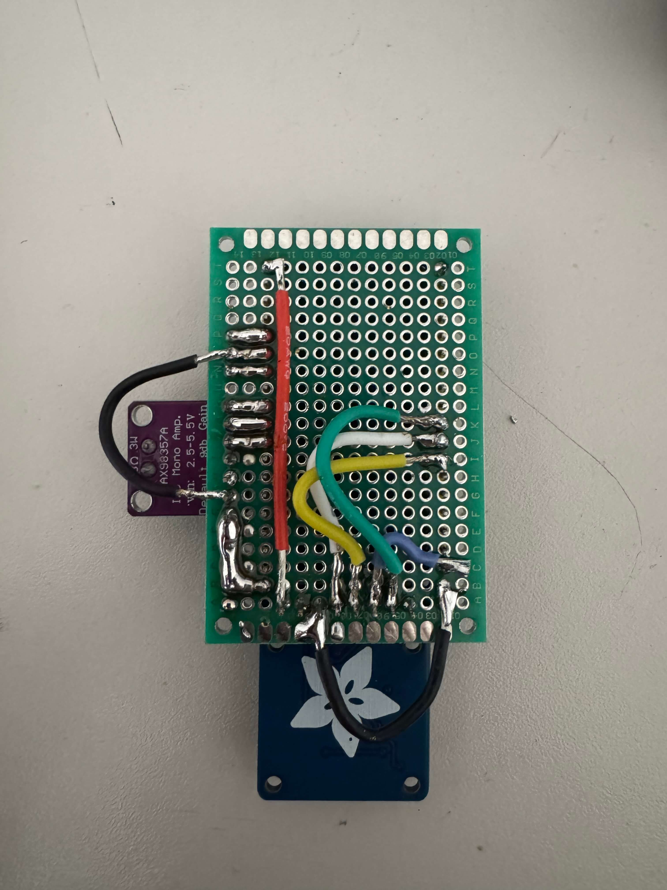
Place the button in such a way that it will connect Ground with pin 13. Seeing I didn't have a button, I ended up using a switch. Run the traces so pin 13 is on the input and GND on the other side. I added an extra trace for safety. As soon as the button is connected, you can also run a trace from the GROUND of the I2S amp on PAD G14 to the ground of the button on PAD O14.
You are now finished. The steps below are an extra for connectivity, but the ESP32 should now be able to make sound once we upload the code.
Below the optional LED:
Plaats de knop zo dat hij Ground verbindt met pin 13. Aangezien ik zelf geen drukknop had, gebruikte ik uiteindelijk een schakelaar. Trek de sporen zo dat pin 13 aan de ingang zit en GND aan de andere kant. Ik voegde voor de zekerheid nog een extra spoor toe. Zodra de knop is aangesloten, kan je ook nog een spoor trekken van de GROUND van de I2S-versterker op PAD G14 naar de massa van de knop op PAD O14.
Je bent nu klaar. De onderstaande stappen zijn een extraatje, maar de ESP32 zou nu al geluid moeten kunnen maken zodra we de code uploaden.
Hieronder de optionele LED:
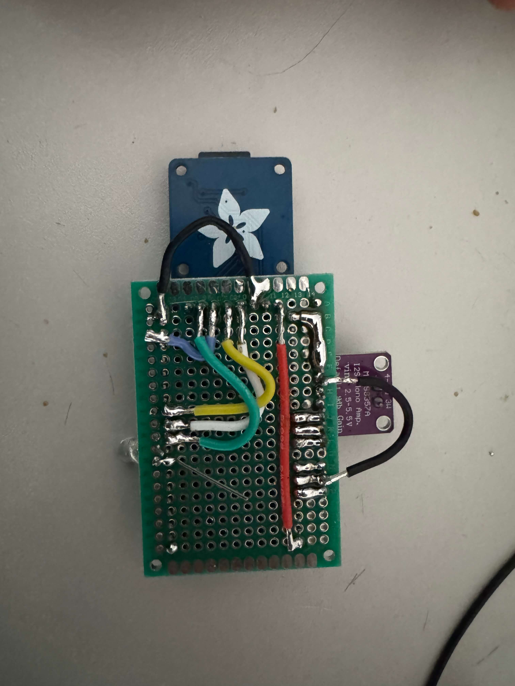
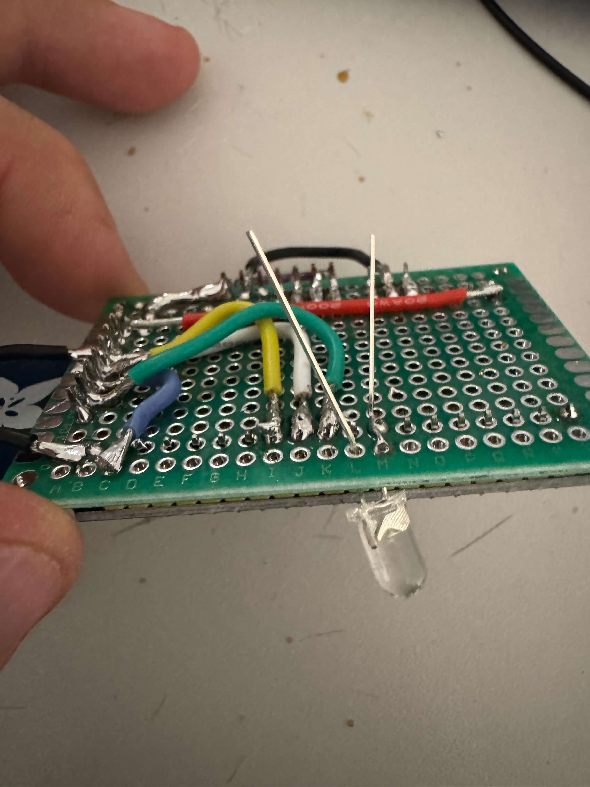
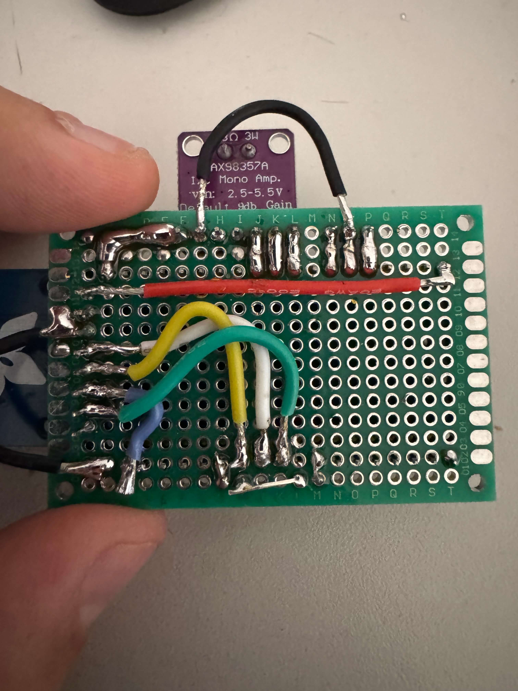
An LED has two legs. The longest one indicates the positive leg. You can place the long let in PAD M1 and bend it to connect it with PAD M2 or pin 16 on the ESP32. Solder the shorter leg, or the negative one on PAD L1 and bend it towards PAD I1. Insert a 270 ohm resistor in pad I1 and H1 by bending it vertically. Use one leg of the resistor to bridge towards GND on the ESP32 on pad H2. Snip off the other legs.
Een LED heeft twee pootjes. Het langste pootje is de positieve kant. Plaats het lange pootje in PAD M1 en buig het om het te verbinden met PAD M2 of pin 16 op de ESP32. Soldeer het kortere, negatieve pootje in PAD L1 en buig het richting PAD I1. Steek een weerstand van 270 ohm verticaal in pad I1 en H1. Gebruik één pootje van de weerstand om een brug te maken naar GND op de ESP32, op pad H2. Knip de overige pootjes af.
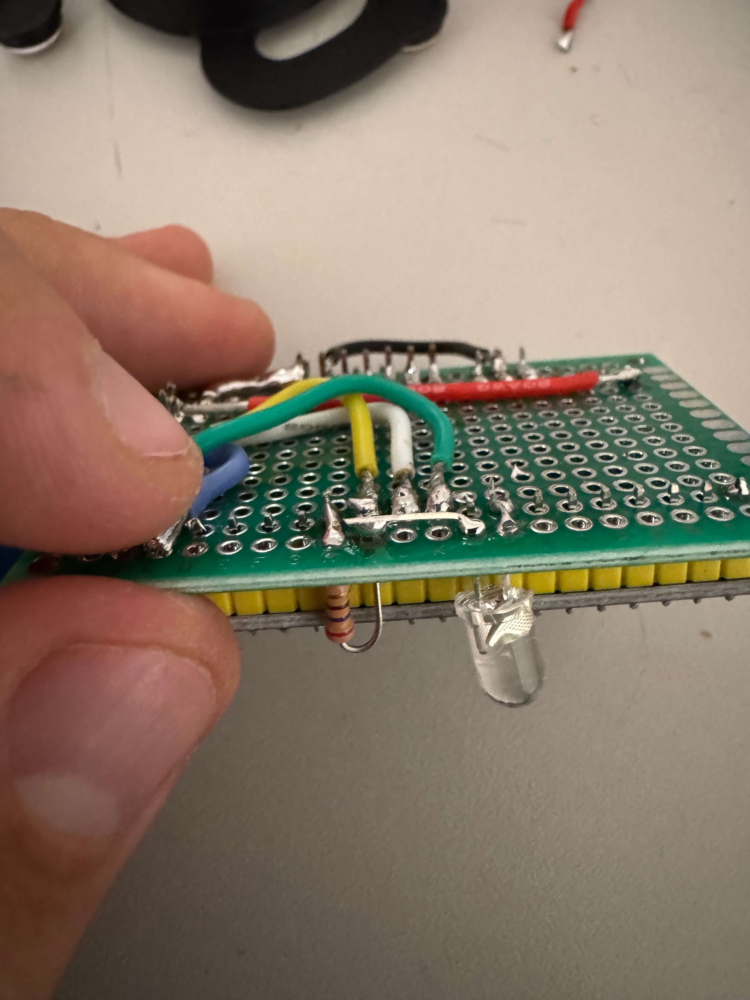
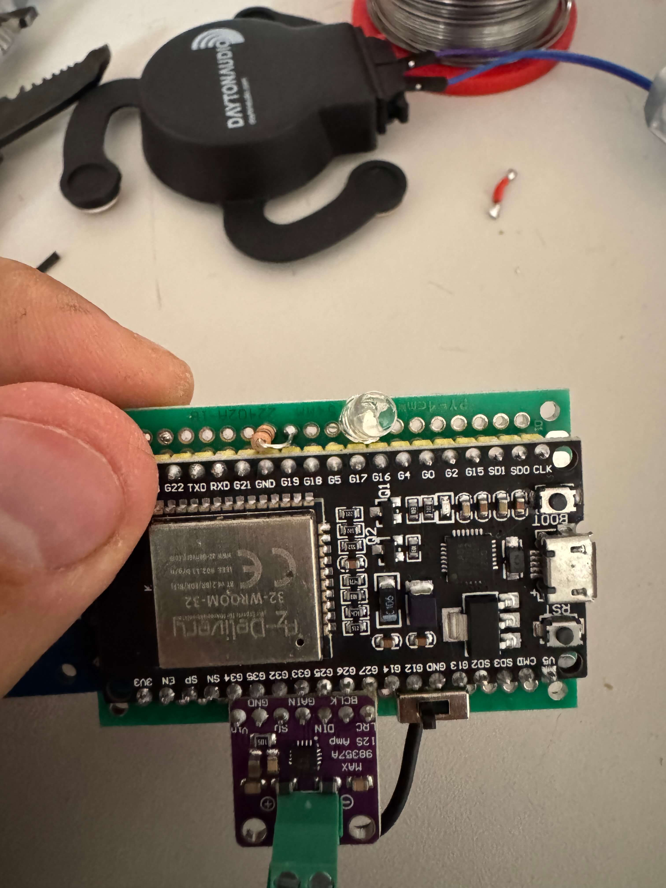
You have now finished soldering and we only need to upload the code. To connect to an ESP32, you have to install Arduino IDE and the proper drivers for your ESP32 type. Below is the code you can upload to the ESP32s, which will make them connect to eachother automatically.
As you can read from the code, the ESP32's LED will blink up onto the point it managed to connect itself with another ESP32, and as soon as they are meshed, pushing the button will start playback after the amount of seconds you specified (standard 5)
After this, you can connect a speaker. I used small exciters for this projecet from the brand Dayton audio. They make 3W ones, which are perfectly compatible with this amp & size.
Je bent nu klaar met solderen en moet enkel nog de code uploaden. Om met een ESP32 te verbinden, moet je de Arduino IDE en de juiste drivers voor jouw ESP32-type installeren. Hieronder staat de code die je naar de ESP32's kan uploaden, waardoor ze automatisch met elkaar verbinden.
Zoals je in de code kan lezen, knippert de LED van de ESP32 tot hij erin slaagt om met een andere ESP32 te verbinden, en zodra ze gemesht zijn, start het indrukken van de knop de afspeling na het aantal seconden dat je hebt ingesteld (standaard 5).
Daarna kan je een speaker aansluiten. Ik gebruikte voor dit project kleine exciters van het merk Dayton Audio. Zij maken 3W-exciters, die perfect compatibel zijn met deze versterker en deze afmetingen.
Loading code…2025 - ESP32 mesh audio network
2025 - ESP32 mesh audionetwerk
Developed with the support of the Flemish Government (Kunstendecreet).
Ontwikkeld met de steun van de Vlaamse overheid (Kunstendecreet).